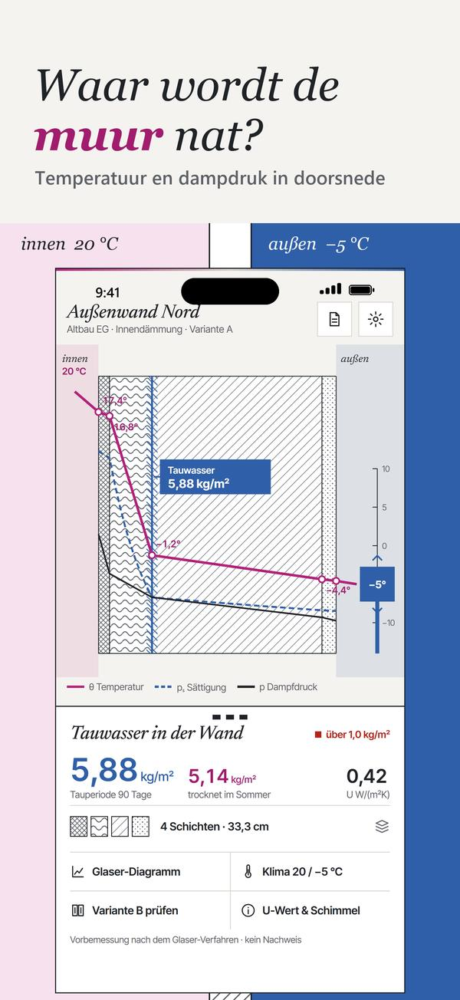
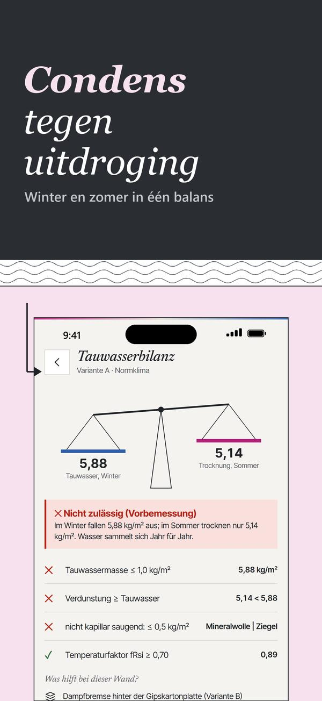
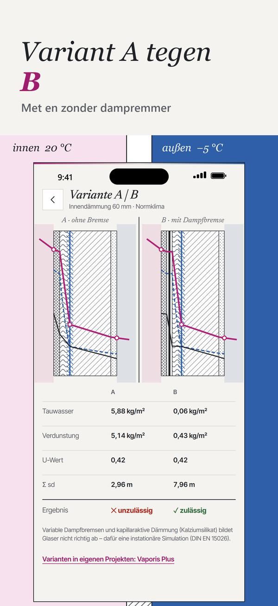
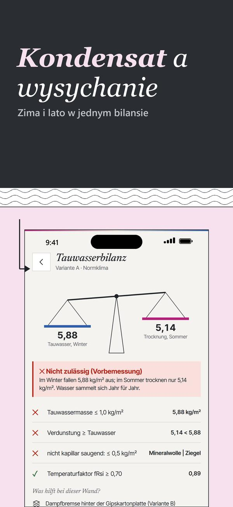
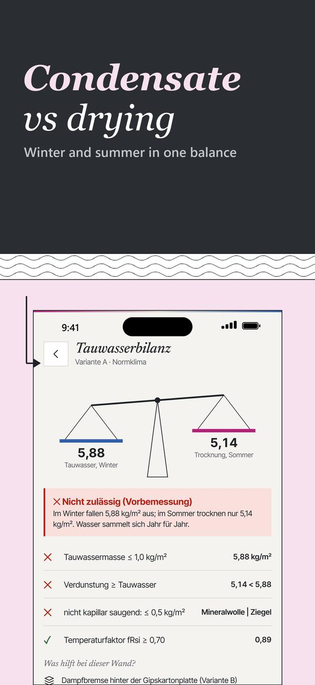

Vaporis prüft Außenwände und Dächer nach dem Glaser-Verfahren. Sie legen den Aufbau Schicht für Schicht an, wählen Materialien aus der Bibliothek und sehen direkt im Querschnitt, wie die Temperatur fällt, wo der Dampfdruck die Sättigung erreicht und wie viel Tauwasser im Winter ausfällt. Ziehen Sie die Außentemperatur nach unten und die Tauwasserebene wandert mit.
Querschnitt mit Temperatur, Sättigungs- und Dampfdruck
Tauwasserebene und Tauwassermasse in kg/m² für 90 Wintertage
Bilanz: Tauwasser im Winter gegen Verdunstung im Sommer
Variante A | B: mit und ohne Dampfbremse nebeneinander
Glaser-Diagramm im sd-Maßstab
U-Wert, Schichttemperaturen und Temperaturfaktor gegen Schimmel
Bibliothek mit rund 150 Materialien und eigenen Datenblattwerten
Vaporis controleert buitenmuren en daken met de Glaser-methode. Je bouwt de constructie laag voor laag op, kiest materialen uit de bibliotheek en ziet in de doorsnede hoe de temperatuur daalt, waar de dampdruk de verzadiging raakt en hoeveel condens er in de winter ontstaat. Sleep de buitentemperatuur omlaag en het condensvlak schuift mee.



Doorsnede met temperatuur, verzadigings- en dampdruk
Condensvlak en hoeveelheid condens in kg/m² over 90 winterdagen
Balans: condens in de winter tegen uitdroging in de zomer
Variant A | B: met en zonder dampremmer naast elkaar
Glaser-diagram op sd-schaal
U-waarde, laagtemperaturen en temperatuurfactor tegen schimmel
Bibliotheek met circa 150 materialen en eigen waarden
Vaporis sprawdza ściany zewnętrzne i dachy metodą Glasera. Układasz przegrodę warstwa po warstwie, wybierasz materiały z biblioteki i widzisz w przekroju, jak spada temperatura, gdzie ciśnienie pary osiąga nasycenie i ile kondensatu powstaje zimą. Przeciągnij temperaturę zewnętrzną w dół, a płaszczyzna kondensacji przesunie się razem z nią.

Przekrój z temperaturą, ciśnieniem nasycenia i ciśnieniem pary
Płaszczyzna kondensacji i ilość kondensatu w kg/m² przez 90 dni zimy
Bilans: kondensat zimą wobec odparowania latem
Wariant A | B: z paroizolacją i bez, obok siebie
Wykres Glasera w skali sd
Współczynnik U, temperatury warstw i czynnik temperaturowy wobec pleśni
Biblioteka ok. 150 materiałów i własne wartości z kart technicznych
Vaporis checks external walls and roofs with the Glaser method. Build the construction layer by layer, pick materials from the library and see in the section how the temperature drops, where vapour pressure meets saturation and how much condensate forms over winter. Drag the outside temperature down and the condensation plane moves with it.

Section with temperature, saturation and vapour pressure
Condensation plane and amount in kg/m² over 90 winter days
Balance: winter condensation against summer drying
Variant A | B: with and without vapour control side by side
Glaser diagram on the sd scale
U-value, layer temperatures and the surface temperature factor for mould
Library of about 150 materials plus your own data-sheet values